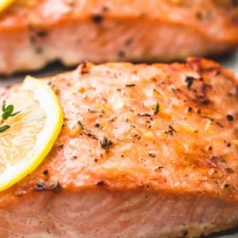

|

|
- 4 salmon fillets - about 6 ounces each
- 2 tablespoons olive oil
- ½ teaspoon salt - or to taste
- ¼ teaspoon cracked black pepper - just a pinch if using finely ground black pepper
- 2 teaspoons minced garlic
- 1 teaspoon Italian herb seasoning blend - OR herbs de provence, or ¼ teaspoon each dried thyme, parsley, oregano, and basil
- 1 medium lemon
|